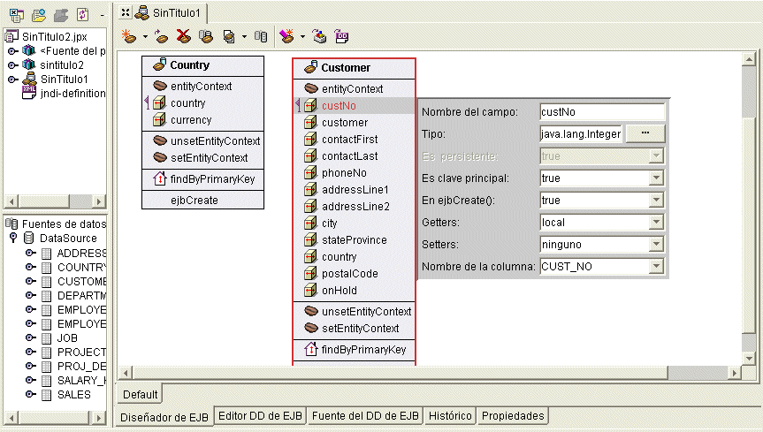

Es una función de JBuilder Enterprise.
El diseñador de EJB es una herramienta bidireccional (Two-Way ToolTM) que permite diseñar visualmente componentes EJB 2.0 mientras JBuilder genera el código a partir del diseño. El diseño se puede modificar por medio del diseñador de EJB o escribiendo directamente en el código fuente generado. El código y el diseño permanecen sincronizados. Cuando se trabaja con el diseñador de EJB se crean los descriptores de distribución, con lo que se prepara el bean para su distribución en el servidor de aplicaciones de destino. Cuando termine de desarrollar los enterprise beans puede utilizar los asistentes y las herramientas de JBuilder para distribuirlos en el servidor de destino.

Si aún no desarrolla componentes EJB 2.0, puede seguir utilizando JBuilder para crear y distribuir componentes EJB 1.x.
Si desea más información, consulte:
Desarrollo de Enterprise JavaBeans Introducción al desarrollo de EJB
Desarrollo de Enterprise JavaBeans: Creación de beans 2.0 sesión y gestionados por mensajes con el diseñador de EJB
Desarrollo de Enterprise JavaBeans: Creación de beans entidad 2.0 con el diseñador de EJB
Desarrollo de Enterprise JavaBeans: Creación de componentes EJB 1.x con JBuilder